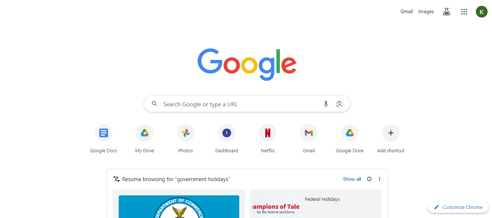

Visual Hierarchy
Organization/Company: Apple
Web Site Address: Apple
Apple uses a proper visual hierarchy — dividing typography into different styles, for instance, bold text for headings and lighter text for explanations. This not only looks good but also helps you understand what's most important.
Rule of Thirds
Organization/Company: Amazon
Web Site Address: Amazon
At the top of their homepage to the middle of the page, they use nine even boxes with text and content. Towards the middle of the page, they have a horizontal wide box for rotating, smaller images.
White Space and Clean Design
Organization/Company: Google
Web Site Address: Google
It is quite clear and easy to tell how clean and simple Google designs their home page. There is lots of white space that makes the search box very easy to find.